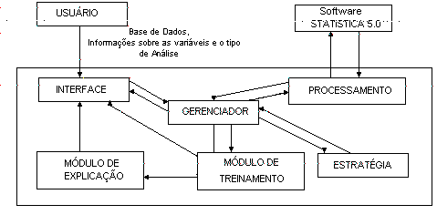
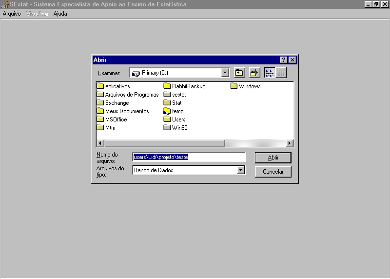
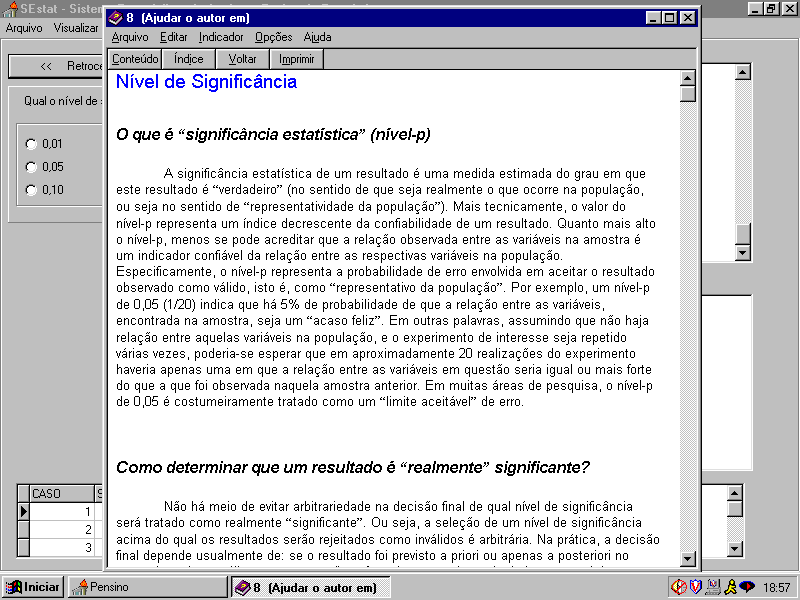
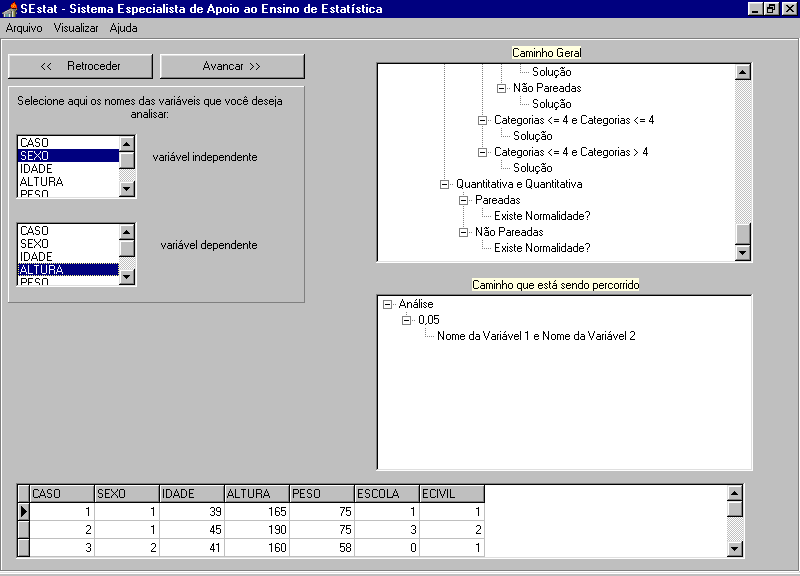
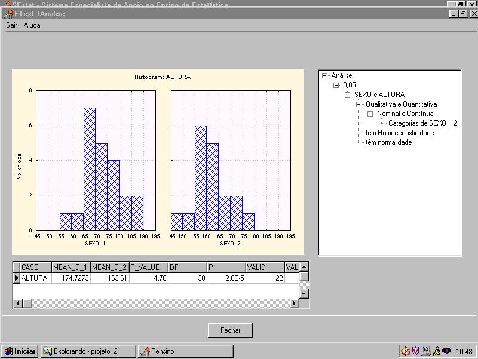

|
Atas da
Conferência Internacional "Experiências e Expectativas do Ensino de Estatística -
Desafios para o Século XXI" |
|
Atas da
Conferência Internacional "Experiências e Expectativas do Ensino de Estatística -
Desafios para o Século XXI" |
Artigo selecionado e apresentado
Concepção e Implementação de um Ambiente de Ensino de Estatística
Cristian Cechinel - cechinel@inf.ufsc.br
Kirliam Maciel Dias - kirliam@inf.ufsc.br
Marcelo Menezes Reis - marcelo@inf.ufsc.br
Masanao Ohira - ohira@inf.ufsc.br
Sílvia Modesto Nassar - silvia@inf.ufsc.br
Universidade Federal de Santa Catarina (UFSC) - Brasil
Departamento de Informática e de Estatística
Laboratório de Métodos de Tratamento de Incertezas, Computação Evolucionária, e Sistemas Adaptativos - LISA
Campus Universitário, Trindade, CEP88040-970, Florianópolis, Santa Catarina, Brasil
RESUMO: Este trabalho tem como objetivo falar sobre o desenvolvimento do SEstat, um sistema especialista direcionado a integrar um ambiente de ensino para Análise Estatística de dados, mostrando suas principais características, funcionamento, as vantagens oferecidas pela sua utilização e relatando a sua aplicação em uma disciplina regular de um curso de graduação da UFSC.
ABSTRACT: This paper aims to talk about the development of SEstat, an Expert System directed to integrate a teaching environment of Data Statistical Analysis, showing its main characteristics, its functioning the advantages of its utilization, and relating its application in a regular UFSC undergraduate course.
KEYWORDS: educational software, expert systems, statistical data analysis.
1. INTRODUÇÃO
A Estatística é utilizada para transformar dados em informações sobre determinada realidade para resolver um problema ou tomar uma decisão. Os dados coletados devem estar dispostos de forma estruturada (base de dados) para que possam ser descritos e analisados. Este processo normalmente é feito utilizando um software estatístico. Atualmente, existem inúmeros softwares estatísticos que fazem esse tipo de processamento, porém, em sua grande maioria são de difícil utilização pelo fato de estarem direcionados a usuários que já possuem um conhecimento estatístico razoável. O objetivo desses softwares é o de disponibilizar a alguém que conheça Estatística uma ferramenta que facilite o seu trabalho, e não uma ferramenta que o ensine a fazer esse trabalho.
Há ainda hoje, uma forte carência quando nos referimos a softwares estatísticos que apoiem o ensino de estatística, ou softwares estatísticos que digam quais procedimentos escolher para um determinado problema, como interpretar os resultados, etc.
Devido a essa carência e à necessidade de ensinar o processo de análise estatística de dados de forma mais global, o Departamento de Informática e de Estatística (INE) da Universidade Federal de Santa Catarina (UFSC) através do seu Laboratório de Tratamento de Incertezas, Sistemas Adaptativos e Computação Evolucionária (LISA) propôs-se a desenvolver um software educacional voltado para o apoio ao ensino da Análise Estatística de Dados.
2. DESENVOLVIMENTO DO SESTAT
A Inteligência Artificial (IA) possibilitou desde o seu surgimento o desenvolvimento de aplicações que apresentam comportamento inteligente. Um dos campos no qual a IA se destaca, é o que trata dos Sistemas Especialistas (SE), onde se desenvolve um sistema que possui a habilidade de tratar os problemas relacionados a um domínio, de forma semelhante a um especialista naquele domínio. Dotados de grande interatividade, os SE proporcionam aos seus usuários uma espécie de diálogo que prende a atenção, e acaba por transmitir a eles algum conhecimento sobre o assunto abordado. Essas características motivaram a utilização dos paradigmas de inteligência artificial direcionados a área de sistemas especialistas na construção do software de apoio ao ensino de estatística que se decidiu chamar de SEstat – Sistema Especialista de Apoio ao Ensino de Estatística.
3. IDEALIZAÇÃO DO SESTAT - OBJETIVOS
O ato pedagógico pleno consiste em quatro etapas de aprendizagem que evidenciam diferentes níveis de conhecimento: definição, conceituação, generalização e síntese. Este processo compreende alguns agentes que atuam no sentido da consecução do ato: professor, aluno e os recursos pedagógicos que podem ser utilizados.
O principal objetivo do SEstat é o de oferecer apoio ao ensino da análise estatística de dados. Para que esse objetivo fosse alcançado, foram determinadas algumas características que seriam necessárias ao sistema.
Base de dados flexível : Permitir ao usuário trabalhar com qualquer base de dados desejada. Dessa maneira, o SEstat dá ao usuário a possibilidade de usar vários conjuntos de dados da sua área de conhecimento. Esta característica proporciona ao usuário a generalização do conhecimento estatístico.
Ser uma ferramenta de análise estatística de dados : Além de recomendar um método estatístico adequado para determinada análise, o SEstat também aplica aquele método e mostra ao usuário os resultados estatísticos obtidos. O processo de seleção do método estatístico inclui a verificação das suposições necessárias para a sua aplicação, tais como normalidade, homocedasticidade, nível de mensuração das variáveis, por exemplo. Isso permitirá que o usuário atinja os níveis de conhecimento de definição e conceituação.
Disponibilizar o caminho que está sendo percorrido : Mostrar ao usuário o caminho que uma dada interação percorre até chegar ao resultado estatístico obtido, e também os caminhos que o sistema pode seguir no caso de respostas diferentes. Essa característica tem como objetivo localizar o usuário dentro do raciocínio estatístico envolvido, e permitir que ele/ela desenvolva a capacidade de generalização do conhecimento estatístico.
Help sensível ao contexto : Dar ao usuário, a qualquer momento da interação, a opção de acessar informações a respeito das questões que o sistema lhe propõe. Proporciona ao usuário reconhecer e apreender conteúdo estatístico.
Supõe-se que a utilização do SEstat, como integrante de um ambiente de ensino de Estatística, fará com que o usuário/aluno passe a ser sujeito do processo de aprendizagem. A intenção é que o usuário/aluno tenha uma atitude de buscar ativamente a construção do seu conhecimento, saindo da tradicional postura passiva de puro receptor. De acordo com essa abordagem, durante o processo de aprendizagem, quando sentir necessidade de apoio, o usuário demandará o auxílio ou intervenção do(s) professor(es), com o intuito de obter uma orientação para o progresso de seu aprendizado: onde ele/ela está naquele momento, e como prosseguir para atingir os objetivos levando em conta seus conhecimentos prévios.
4. FUNCIONAMENTO DO SESTAT
O sistema foi desenvolvido na linguagem de programação Object Pascal no ambiente DELPHI 3.0Ô , e tem como característica marcante a comunicação com o software Statistica 5.0Ô , cujo papel é o de realizar o processamento da análise estatística de dados propriamente dita.
A partir de uma Base de Dados (em formato .dbf) fornecida pelo usuário, o SEstat faz um conjunto de perguntas a ele, e fornece ao mesmo suporte para que essas perguntas sejam respondidas corretamente. Ao longo da interação do usuário com o sistema, o caminho a ser percorrido nesta interação é escolhido através das respostas dadas pelo usuário às perguntas referentes à análise estatística que se está realizando. No final da interação, o sistema escolhe e aplica uma técnica de análise estatística para os dados fornecidos pelo usuário, e explica ao mesmo por que aquela técnica foi escolhida, bem como apresenta explicações que possibilitam a interpretação dos resultados estatísticos encontrados.
5. ARQUITETURA DO SESTAT
O conhecimento estatístico foi dividido e distribuído entre módulos (objetos), dando assim a cada módulo uma característica e uma tarefa específica. Os módulos possuem a capacidade de se comunicarem entre si e de decidir qual módulo é mais capaz de executar determinada tarefa. São eles: o Gerenciador, a Estratégia, o Processamento, o software Statistica 5.0Ô , o Mecanismo de Explicação e a Interface.
A seguir estão descritos estes módulos do sistema e suas respectivas funções:
Gerenciador: Decide qual módulo é capacitado para executar a tarefa que é necessária em um determinado ponto da execução da análise de dados.
Estratégia: De acordo com as informações fornecidas pelo Gerenciador, este módulo irá procurar uma estratégia adequada para a resolução do problema em questão.
Processamento: Responsável pela comunicação com o software Statistica 5.0Ô , este módulo possui conhecimento sobre os passos necessários para a execução de um determinado procedimento estatístico.
Software Statistica 5.0Ô : Como já dito anteriormente, o Statistica realiza a análise de dados propriamente dita através da execução dos passos fornecidos pelo Processamento.
Mecanismo de Explicação: Consiste basicamente no módulo de ajuda do sistema, que tem por finalidade explicar ao usuário conceitos estatísticos, e é capaz de mostrar o caminho que foi percorrido para se chegar as decisões tomadas. Os conceitos estatísticos disponíveis no SEstat são de dois tipos:
Interface: Recolhe do usuário as informações que serão processadas pelo sistema, como por exemplo o nome e a mensuração das variáveis a serem analisadas. Mostra ao usuário a evolução do sistema, assim como as soluções obtidas e as respostas às perguntas feitas pelo usuário.
Módulo de Treinamento: Devido ao fato de trabalhar com uma base de dados flexível, o sistema não possui o controle e o conhecimento das características das variáveis com as quais o usuário está lidando; esta flexibilidade ao domínio pesquisado ("free context") tem a desvantagem de permitir que o usuário responda à perguntas de forma errada sem que haja a intervenção do sistema para a correção da resposta. Em conseqüência disso, o sistema pode tomar um caminho errado na busca dos resultados estatísticos, fazendo com que o aluno não aprenda a realizar adequadamente a análise de dados.
A solução encontrada para resolver este problema foi a construção de um módulo de treinamento dentro do SEstat. Este módulo trabalha com uma base de dados fixa (já conhecida pelo sistema), e dá ao sistema a possibilidade de identificar erros nas respostas do usuário assim como avisá-lo sobre esses erros. A cada interação do usuário com o SEstat, o módulo de treinamento irá intervir fazendo observações a respeito da resposta que foi dada, comentando os acertos e fornecendo explicações para os erros.
Desta forma, o usuário que não estiver habituado a utilizar o sistema, utilizará o Módulo de Treinamento para aprender os conceitos estatísticos envolvidos e depois poderá aprimorar esse aprendizado utilizando uma base de dados qualquer escolhida por ele.
O módulo de ajuda contém um dispositivo de acompanhamento sobre as respostas de cada usuário, ou seja, os erros e os acertos do usuário são contabilizadas em arquivo de dados. Assim, o professor pode comparar qual foi o desempenho dos alunos dentro de uma mesma turma, como também pode comparar o desempenho entre turmas distintas. Esse acompanhamento possibilita localizar quais os assuntos da disciplina que mais oferecem resistência aos alunos e dá ao professor a oportunidade de replanejar a abordagem pedagógica utilizada para o ensino desses assuntos. Além disso, também permite que o professor personalize o ensino de Estatística para diferentes cursos e suas respectivas áreas de conhecimento.

Figura 1 – Arquitetura do Sestat
6. EXEMPLO DE UTILIZAÇÃO DO SESTAT
Um pesquisador coletou dados sobre sexo, idade, altura, estado civil, escolaridade , com o objetivo de conhecer o perfil dos funcionários de uma empresa de SC, no período de janeiro a junho de 1998. Devido a necessidade de rápido processamento, dos 300 funcionários foi selecionada uma amostra aleatória de 40 indivíduos e os dados amostrais foram dispostas numa base de dados padrão .dbf.
Considerando o objetivo específico de verificar a associação entre SEXO e ALTURA, será mostrado um exemplo de uma análise estatística utilizando o SEstat.

Figura 2 – Abertura da Base de Dados
Aqui, o usuário deve escolher a base de dados que será exportada para o formato .sta (formato utilizado pelo software Statistica 5.0Ô ). Esta base de dados deverá ser fornecida pelo professor (nada impede que o aluno utilize uma base de dados que ele possua) e deverá estar em formato .dbf.
A Figura 3 abaixo mostra o SEstat oferecendo ajuda a respeito do conceito estatístico: nível de significância. Caso o usuário deseje pesquisar sobre algum outro conceito, basta para isso, clicar no botão índice (parte superior do help).

Figura 3 – Ajuda sobre Nível de Significância
Uma vez carregada a base de dados de interesse, o usuário precisa informar ao sistema os objetivos da sua pesquisa (se pretende fazer uma análise ou descrição), e as variáveis da base de dados que serão incluídas, qual será a variável independente e qual será a dependente. Neste exemplo, o usuário escolheu a variável ALTURA como dependente e a variável SEXO como independente, o que pode ser observado na Figura 4 abaixo:

Figura 4 – Escolha das Variáveis
Algumas características importantes da interface do SEstat, presentes na Figura 4 precisam ser ressaltadas:
- as questões são apresentadas ao usuário sempre no mesmo local, no canto esquerdo superior da tela;
- o usuário irá escolher as variáveis a partir daquelas existentes na base de dados, que são apresentadas em uma lista;
- o usuário tem completo acesso à base de dados, na parte de baixo da tela;
- no lado direito da tela há duas figuras importantes:
- a superior apresenta todos os caminhos possíveis para uma interação entre o usuário e o sistema, dentro do objetivo principal escolhido (no presente caso, todas as opções possíveis para uma análise estatística);
- a inferior apresenta o caminho seguido na presente interação (no exemplo, está sendo feita uma análise, com 5% de nível de significância, e agora serão escolhidas as variáveis).
Após o usuário ter respondido todas as perguntas apresentadas, o SEstat escolhe e aplica a técnica estatística mais adequada ao problema. A Figura 5 a seguir apresenta uma tela com os resultados do processamento:

Figura 5 – Resposta do SEstat (Teste t)
O SEstat apresenta os resultados de três maneiras: numérica (através dos resultados do procedimento), gráfica (através de gráficos, como os dois histogramas acima) e em forma de raciocínio (na janela à direita, o caminho seguido para obter os resultados). Esta última é especialmente importante em um processo de ensino.
Na figura acima pode ser observado o raciocínio seguido pelo SEstat:
- o usuário decidiu-se por uma Análise Estatística;
- adotou um nível de significância de 5%;
- escolheu a variável SEXO como Independente e a variável ALTURA como Dependente;
- o usuário informou ainda que SEXO é Qualitativa e ALTURA é Quantitativa;
- informou também que SEXO é Qualitativa Nominal (apresentando duas categorias) e que ALTURA é Quantitativa Contínua.
Neste ponto o Sistema pode seguir por dois caminhos: aplicar um teste paramétrico (no caso o teste t), usualmente mais poderoso, ou um teste não paramétrico (no caso o teste de Mann-Whitney), para comparar as alturas dos indivíduos dos dois sexos. Para decidir qual teste aplicar, é preciso verificar se as suposições de homocedasticidade (se as variâncias da ALTURA são semelhantes nos dois sexos), e de normalidade (se ALTURA segue a distribuição Normal em ambos os sexos) são satisfeitas pelos dados. Se ambas forem satisfeitas pelos dados, o SEstat aplica um teste paramétrico (teste t, no exemplo), senão aplica um não paramétrico (Mann-Whitney, no exemplo). O SEstat realiza os testes estatísticos de homocedasticidade e de normalidade e apresenta os resultados ao usuário, que decide se as suposições foram satisfeitas.
No exemplo, o SEstat aplicou os testes aos dados, e apresentou os resultados. O usuário decidiu que ambas as suposições foram satisfeitas, e o sistema aplicou o teste t aos dados, comparando as médias de ALTURA nos dois grupos de SEXO. Com base nos resultados encontrados o usuário pode realizar a interpretação: para a análise em questão concluiu-se que há relação entre as variáveis SEXO e ALTURA.
8. ENSINO UTILIZANDO O SESTAT
O SEstat foi utilizado como ferramenta de apoio ao ensino em uma disciplina regular de um curso de graduação da UFSC. Trata-se da disciplina Métodos Estatísticos, oferecida pelo departamento de Informática e de Estatística para os cursos de Engenharia de Produção e de Ciência da Computação da UFSC (usualmente uma turma para o curso de Engenharia e outra para o curso de Computação, com cerca de 40 alunos cada). A disciplina abrange basicamente técnicas de análise estatística de dados (paramétricas e não paramétricas), e tem como pré-requisito a disciplina de Probabilidade (onde são vistos os conceitos e modelos probabilísticos mais importantes). Decidiu-se aplicar o SEstat apenas para a turma do curso de Engenharia de Produção.
A utilização do SEstat foi feita no Laboratório Integrado de Informática do Centro Tecnológico da UFSC, de maneira a que o conjunto SEstat – Laboratório – Professores constituisse um ambiente de ensino de Estatística. Praticamente toda a disciplina foi conduzida dentro do laboratório. A intenção deste processo era fazer com que o aluno, usando o SEstat como instrumento e apoiado pelos professores, passasse a ser sujeito do aprendizado de Estatística.
Primeiramente os alunos familiarizavam-se com o Sistema, e com os conceitos estatísticos necessários, através da análise estatística de uma base de dados preparada previamente (dentro do Módulo de Treinamento do SEstat). Em um segundo momento, como parte do trabalho de campo obrigatório da disciplina, os alunos buscavam seus próprios dados: delineavam e executavam uma pesquisa sobre um tema de sua livre escolha, da sua realidade. Uma vez coletados, os dados eram transcritos em uma base de dados e os alunos usavam o SEstat para produzir os resultados estatísticos desejados, realizando tal processo com espírito crítico. Esse processo foi muito bem sucedido.
O papel do professor neste ambiente de ensino é atuar como suporte do processo do qual o aluno é o sujeito, agindo quando há uma demanda consciente por parte do aluno, ou quando percebe que é o momento adequado para um suporte teórico. Foi dada grande ênfase à interação entre professor e alunos.
9. CONCLUSÕES
Entre as vantagens do SEstat podemos citar a possibilidade do usuário trabalhar com qualquer base de dados. Desta maneira, o professor pode fornecer aos alunos bases de dados com conjuntos de informações variadas, fazendo com que os mesmos, ao utilizarem o sistema, enfrentem as mais diversas situações. Há também a possibilidade de que os alunos utilizem dados que eles mesmos tenham coletado.
É importante lembrar que além de ser uma ferramenta de apoio ao ensino, o sistema também é uma ferramenta de análise de dados, pois, uma vez que todas as perguntas foram respondidas de forma correta, a resposta fornecida pelo sistema tem um valor estatístico real (considerando que a coleta de dados foi realizada corretamente).
A qualquer momento da interação o usuário poderá buscar informações a respeito das questões que o sistema lhe propõe, sendo que essas informações são de fácil acesso e sensíveis ao contexto.
Outra característica importante do sistema é mostrar ao usuário o caminho que uma dada interação percorre, até chegar ao resultado obtido, e também os caminhos que o sistema pode seguir, no caso de respostas diferentes. Portanto, para cada resposta do usuário, seu caminho fica restrito, de modo a convergir para uma conclusão.
No módulo de treinamento poderão ser disponibilizadas diferentes bases de dados direcionadas a diversos assuntos, permitindo ao professor adequar o ensino de Estatística (através do SEstat) a diferentes áreas (cursos).
Uma das características interessantes do SEstat é o fato do Sistema constituir uma ferramenta de suporte para exploração do software Statistica 5.0Ô , e de outros softwares estatísticos. Através do uso do SEstat os alunos aprendem e exercitam, com dados da sua realidade, como deve ser construída uma base de dados, e que procedimentos estatísticos devem ser aplicados para obter os resultados desejados, em suma, permite que eles compreendam como desenvolver o raciocínio estatístico. Uma vez conhecendo as técnicas e as suposições necessárias para seu uso, os estudantes podem trabalhar diretamente no software estatístico, que proporciona mais procedimentos estatísticos do que o SEstat permite acessar no presente momento.
É importante ressaltar que o objetivo desse software educacional não é substituir o trabalho do professor, e sim facilitar esse trabalho servindo como ferramenta de apoio ao processo de ensino-aprendizagem de Estatística. O uso da Informática na Educação é uma atividade em expansão, e que está atraindo a atenção de muitos pesquisadores no sentido de avaliar onde e de que maneira deve ser aplicada.
10. TRABALHOS FUTUROS
Uma proposta para trabalhos futuros é a ampliação do número de variáveis que podem ser analisadas ao mesmo tempo. Nesta primeira versão, o SEstat oferece a opção da análise simultânea de no máximo duas variáveis (variável independente e variável dependente), em uma próxima versão o SEstat poderá oferecer a opção da análise conjunta com uma terceira variável (variável interveniente).
Uma outra possibilidade é utilizar um software estatístico diferente, ou mesmo desenvolver os procedimentos estatísticos diretamente em uma linguagem de programação.
11. REFERÊNCIAS BIBLIOGRÁFICAS
[BARBETTA-98] BARBETTA, Pedro A. Estatística Aplicada às Ciências Sociais, Editora da UFSC, 2a Ed., Florianópolis, 1998.
[NASSAR-95] NASSAR, Silvia M., Sistema Estatístico Inteligente para Apoio a Pesquisas Médicas, Tese de Doutorado, UFSC, Brasil, dezembro de 1995.
[PÉREZ-97] PEREZ, Rocio C. Sistema Especialista de Apoio à Decisão Médica com Metodologias de Aprendizagem Simbólica, Dissertação de Mestrado, UFSC, janeiro de 1997.
[RAMOS-91] RAMOS, Edla. O Fundamental na Avaliação da Qualidade do Software Educacional, Departamento de Informática e de Estatística, UFSC, 1991.
[REIS-97] REIS, L. e CARGNIN, M. Raciocínio Baseado em Casos, Projeto de Conclusão de Curso de Ciências da Computação, Florianópolis, UFSC, julho de 1997.
[CECHINEL-98] CECHINEL,C e MOREIRA,L Sistema Especialista de Apoio ao Ensino de Estatística, Projeto de Conclusão de Curso de Ciências da Computação, Florianópolis, UFSC, julho de 1998.
[CECHINEL-99] CECHINEL, C., REIS, M. M., OHIRA, M., NASSAR, S. M., The Use of an Expert System to Support Statistics Teaching, IASTED Computers and Advanced Technology in Education – CATE’99, Philadelphia, Pennsylvania, EUA, Maio de 1999.
[CATAPAN – 97] CATAPAN, Araci H., O Ato Pedagógico: a Construção do Conceito. DOIS PONTOS, vol.5, n. 35, Nov.Dez 1997, p.67 - 69